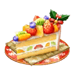

本頁面資訊僅供參考，實際情況請以遊戲內資料為準。
由於直接使用官方翻譯，可能會與其他站內翻譯相異，敬請見諒。
其他公告內容請參照日版當時公告翻譯。

| 關卡 | AP |  | 素材 | |||
|---|---|---|---|---|---|---|
| 初級 | 10 | ○ | △ | △ | ||
| 中級 | 20 | △ | ○ | △ | ||
| 上級 | 30 | △ | ○ | △ | ||
| 超級 | 40 | △ | △ | △ | △ | |
| 小雪級 | 40 | ◎ | △ | △ | ||
| 大雪級 | 40 | ◎ | ◎ | △ | ||
| 鵝毛大雪級 | 40 | ◎ |
- 主線關卡
-
第一夜「貞德怎麼了？」 消耗AP 推薦Lv. 初次報酬 開放條件 5 20 暫時加入 7/18 13:00~7/31 22:59
通過：龍之魔女〉 職階傾向 QP Exp 絆 


2,400 955 215 Wave 1 1  Lv.6 平安夜之狼 HP13,160
Lv.6 平安夜之狼 HP13,1602  Lv.6 平安夜之狼 HP12,380
Lv.6 平安夜之狼 HP12,3803 Lv.6 平安夜之狼 HP13,160Wave 2 1  Lv.25 聖誕．Alter HP60,985
Lv.25 聖誕．Alter HP60,985第二夜「愚者的禮物」 消耗AP 推薦Lv. 初次報酬 開放條件 5 22 7/19 0:00~7/31 22:59
通過：第一夜「貞德怎麼了？」〉 職階傾向 QP Exp 絆 2,600 1,120 235 Wave 1 1  Lv.10 馴鹿人 HP9,927
Lv.10 馴鹿人 HP9,9272 Lv.10 馴鹿人 HP9,9273 Lv.10 馴鹿人 HP9,927Wave 2 1 Lv.10 回歸的爛醉荊軻 HP11,9892 Lv.12 醉酒的廢狗 HP11,9653 Lv.9 今夜不想回去的瑪塔．哈里 HP11,993Wave 3 1 Lv.23 素面瑪爾大 HP50,997第三夜「我們是中學二年級學生」 消耗AP 推薦Lv. 初次報酬 開放條件 5 24 7/20 0:00~7/31 22:59
通過：第二夜「愚者的禮物」〉 職階傾向 QP Exp 絆 
2,800 1,300 255 Wave 1 1 Lv.7 雪人 HP4,5122 Lv.8 巨型雪人 HP4,622Wave 2 1 Lv.9 雪人 HP7,7982 Lv.10 巨型雪人 HP7,8983 Lv.9 雪人 HP7,798Wave 3 1 Lv.6 風魔小太郎 HP29,4732 Lv.33 俵藤太 HP44,204第四夜「迷宮中的快樂聖誕」 消耗AP 推薦Lv. 初次報酬 開放條件 5 26 7/21 0:00~7/31 22:59
通過：第三夜「我們是中學二年級學生」〉〉 職階傾向 QP Exp 絆 
3,000 1,455 275 Wave 1 1  Lv.13 馴鹿人 HP3,744
Lv.13 馴鹿人 HP3,7442 Lv.14 馴鹿人 HP3,8573 Lv.13 馴鹿人 HP3,713Wave 2 1 Lv.17 馴鹿人 HP9,8412 Lv.12 雪人 HP8,4833 Lv.12 雪人 HP8,483Wave 3 1 Lv.27 巨型雪人 HP81,643〉〉 職階傾向 QP Exp 絆 3,000 1,455 275 Wave 1 1 Lv.13 聖誕之手 HP16,1472 Lv.14 聖誕之手 HP16,6583 Lv.15 聖誕之拳 HP17,640Wave 2 1  Lv.9 童謠 HP31,708
Lv.9 童謠 HP31,7082  Lv.19 傑克 HP47,550
Lv.19 傑克 HP47,550第五夜「再次星願」 消耗AP 推薦Lv. 初次報酬 開放條件 5 28 7/22 0:00~7/31 22:59
通過：第四夜「迷宮中的快樂聖誕」〉 職階傾向 QP Exp 絆 
3,200 1,610 295 Wave 1 1  Lv.15 馴鹿人 HP18,304
Lv.15 馴鹿人 HP18,3042 Lv.14 聖誕之手 HP17,7553 Lv.15 馴鹿人 HP18,304Wave 2 1  Lv.45 列奧尼達 HP85,337
Lv.45 列奧尼達 HP85,337第六夜「聖誕老人多美好！」 消耗AP 推薦Lv. 初次報酬 開放條件 5 30 7/23 0:00~7/31 22:59
通過：第五夜「再次星願」〉 職階傾向 QP Exp 絆 3,400 2,190 315 Wave 1 1 Lv.15 雪人 HP19,3982 Lv.15 雪人 HP19,3983 Lv.15 雪人 HP19,398Wave 2 1  Lv.33 聖達 HP57,151
Lv.33 聖達 HP57,1512 Lv.18 寵孩子的哈桑 HP34,294第七夜「最後一份給你的禮物」 消耗AP 推薦Lv. 初次報酬 開放條件 5 32 7/24 0:00~7/31 22:59
通過：第六夜「聖誕老人多美好！」〉〉 職階傾向 QP Exp 絆 3,600 2,810 335 Wave 1 1 Lv.14 童話人偶 HP5,1872 Lv.14 童話人偶 HP5,1873 Lv.14 童話人偶 HP5,187Wave 2 1 Lv.15 童話人偶 HP13,0472 Lv.16 童話人偶 HP13,4453 Lv.15 童話人偶 HP13,047Wave 3 1 Lv.22 童話人偶 HP103,774〉〉 職階傾向 QP Exp 絆 
3,600 2,810 335 Wave 1 1  Lv.20 聖誕島假面 HP60,146
Lv.20 聖誕島假面 HP60,146 - 收集襪子
-
襪子蒐集 初級 聖誕演唱會 消耗AP 推薦Lv. 初次報酬 開放條件 10 15 7/18 13:00~7/31 22:59
通過：第一夜「貞德怎麼了？」∞ 職階傾向 QP Exp 絆 
1,900 550 165 Wave 1 1  Lv.10 馴鹿人 HP6,505
Lv.10 馴鹿人 HP6,505
Lv.6 平安夜之狼 HP6,3602 Lv.10 馴鹿人 HP6,505
Lv.6 平安夜之狼 HP6,3603 Lv.10 馴鹿人 HP6,505
Lv.6 平安夜之狼 HP6,360Wave 2 1  Lv.10 伊莉莎白 HP14,187
Lv.10 伊莉莎白 HP14,1872  Lv.27 卡米拉 HP26,367
Lv.27 卡米拉 HP26,367襪子蒐集 中級 魔女的聖誕會 消耗AP 推薦Lv. 初次報酬 開放條件 20 25 7/18 13:00~7/31 22:59
通過：襪子蒐集 初級 聖誕演唱會∞ 職階傾向 QP Exp 絆 2,900 1,385 265 Wave 1 1 Lv.10 巨型馴鹿人 HP5,550
 Lv.9 平安夜半人馬 HP5,484
Lv.9 平安夜半人馬 HP5,4842 Lv.10 巨型馴鹿人 HP5,550
Lv.9 平安夜半人馬 HP5,484Wave 2 1 Lv.12 巨型馴鹿人 HP16,293
Lv.11 平安夜半人馬 HP16,1022 Lv.12 巨型馴鹿人 HP16,293
Lv.11 平安夜半人馬 HP16,102Wave 3 1 Lv.8 美狄亞．Lily HP34,5122 Lv.28 美狄亞 HP46,695襪子蒐集 上級 咪咕咪咕聖誕節 消耗AP 推薦Lv. 初次報酬 開放條件 30 40 7/18 13:00~7/31 22:59
通過：襪子蒐集 中級 魔女的聖誕會∞ 職階傾向 QP Exp 絆 4,400 5,690 415 Wave 1 1 Lv.19 雪人 HP10,720
 Lv.21 海綿魔偶 HP10,695
Lv.21 海綿魔偶 HP10,6952 Lv.19 雪人 HP10,720
Lv.21 海綿魔偶 HP10,695Wave 2 1 Lv.24 雪人 HP21,140
Lv.26 海綿魔偶 HP21,3902 Lv.24 雪人 HP21,140
Lv.26 海綿魔偶 HP21,3903 Lv.24 雪人 HP21,140
Lv.26 海綿魔偶 HP21,390Wave 3 1  Lv.15 玉藻貓 HP48,420
Lv.15 玉藻貓 HP48,4202  Lv.45 玉藻前 HP65,537
Lv.45 玉藻前 HP65,537襪子蒐集 超級 聖誕節之計 消耗AP 推薦Lv. 初次報酬 開放條件 40 60 7/18 13:00~7/31 22:59
通過：襪子蒐集 上級 咪咕咪咕聖誕節∞ 職階傾向 QP Exp 絆 6,400 15,690 615 Wave 1 1 Lv.32 巨型馴鹿人 HP10,002
Lv.28 平安夜之狼 HP9,8252 Lv.32 巨型馴鹿人 HP9,964
Lv.31 平安夜半人馬 HP9,7673 Lv.33 雪人 HP9,863
Lv.36 海綿魔偶 HP9,898Wave 2 1 Lv.39 奶油奇美拉 HP73,763Wave 3 1 Lv.38 諸葛孔明 HP82,8012 Lv.57 諸葛孔明 HP112,074襪子蒐集 小雪級 圓桌聖誕節 消耗AP 推薦Lv. 初次報酬 開放條件 40 70 7/20 0:00~7/31 22:59
通過：襪子蒐集 超級 聖誕節之計∞ 職階傾向 QP Exp 絆 7,400 22,190 715 Wave 1 1  Lv.40 聖誕之手 HP11,688
Lv.40 聖誕之手 HP11,6882 Lv.40 聖誕之手 HP11,6883 Lv.35 禮物之手 HP11,205Wave 2 1 Lv.41 裝飾點心凝視者 HP60,6852 Lv.39 禮物之手 HP26,052Wave 3 1  Lv.47 Saber．Lily HP96,645
Lv.47 Saber．Lily HP96,6452 Lv.62 阿爾托莉亞 HP130,787襪子蒐集 大雪級 英雄王的聖誕節 消耗AP 推薦Lv. 初次報酬 開放條件 40 80 7/22 0:00~7/31 22:59
通過：襪子蒐集 小雪級 圓桌聖誕節∞ 職階傾向 QP Exp 絆 8,400 29,690 815 Wave 1 1 Lv.35 超級馴鹿人 HP13,2472 Lv.34 平安夜之狼 HP13,285 3 Lv.34 平安夜之狼 HP13,285 Wave 2 1 Lv.41 蠟燭火 HP77,8612 Lv.40 超級馴鹿人 HP33,439Wave 3 1  Lv.71 吉爾伽美什 HP148,725
Lv.71 吉爾伽美什 HP148,7252 Lv.58 子吉爾 HP99,188襪子蒐集 鵝毛大雪級 反擊的聖誕節 消耗AP 推薦Lv. 初次報酬 開放條件 40 90 7/24 0:00~7/31 22:59
通過：襪子蒐集 大雪級 英雄王的聖誕節∞ 職階傾向 QP Exp 絆 9,400 38,190 915 Wave 1 1 Lv.53 聖誕之手 HP14,262
Lv.47 禮物之手 HP14,0932 Lv.42 巨型雪人 HP14,076
Lv.36 混沌機械兵 HP13,1793 Lv.43 超級馴鹿人 HP14,176
Lv.34 平安夜豹人 HP14,030Wave 2 1  Lv.80 草莓龍 HP80,648
Lv.80 草莓龍 HP80,648Wave 3 1 Lv.80 聖誕．Alter HP161,9542 Lv.60 阿斯忒里翁 HP65,1813 Lv.70 凱撒 HP98,924
| 第1~4輪 | |||||
|---|---|---|---|---|---|
| 獎品 | 數量 | 獎品 | 數量 | 獎品 | 數量 |
| 1 | 5 | 1 | |||
| 3 | 4 | 3 | |||
| 3 | 4 | 4 | |||
| 1 | 1 | 1 | |||
| 1 | 1 | 1 | |||
| 1 | 2 | 2 | |||
| 2 | 2 | 2 | |||
| 2 | 2 | 3 | |||
| 3 | 3 | 3 | |||
| 3 | 3 | 3 | |||
| 30 | 15 | 5 | 1 | ||
2 | 20 | 25 | 500k | 2 | |
100k | 15 | 50k | 30 | 30k | 45 |
10k | 83 | 2k | 4 | 100 | 60 |
| 第5輪 | |||||
|---|---|---|---|---|---|
| 獎品 | 數量 | 獎品 | 數量 | 獎品 | 數量 |
| 1 | 5 | 1 | |||
| 3 | 4 | 3 | |||
| 3 | 4 | 4 | |||
| 1 | 1 | 1 | |||
| 1 | 1 | 1 | |||
| 1 | 2 | 2 | |||
| 2 | 2 | 2 | |||
| 2 | 2 | 3 | |||
| 3 | 3 | 3 | |||
| 3 | 3 | 3 | |||
| 30 | 15 | 5 | 1 | ||
2 | 20 | 25 | 500k | 2 | |
100k | 15 | 50k | 30 | 30k | 45 |
10k | 83 | 2k | 4 | 100 | 60 |
| 第6輪 | |||||
|---|---|---|---|---|---|
| 獎品 | 數量 | 獎品 | 數量 | 獎品 | 數量 |
| 1 | 5 | 1 | |||
| 3 | 4 | 3 | |||
| 3 | 4 | 4 | |||
| 1 | 1 | 1 | |||
| 1 | 1 | 1 | |||
| 1 | 2 | 2 | |||
| 2 | 2 | 2 | |||
| 2 | 2 | 3 | |||
| 3 | 3 | 3 | |||
| 3 | 3 | 3 | |||
| 30 | 15 | 5 | 1 | ||
2 | 20 | 25 | 500k | 2 | |
100k | 15 | 50k | 30 | 30k | 45 |
10k | 83 | 2k | 4 | 100 | 60 |
| 第7輪以後 | |||||
|---|---|---|---|---|---|
| 獎品 | 數量 | 獎品 | 數量 | 獎品 | 數量 |
| 5 | 4 | 3 | |||
| 3 | 4 | 4 | |||
| 1 | 1 | 1 | |||
| 1 | 1 | 1 | |||
| 1 | 2 | 2 | |||
| 2 | 2 | 2 | |||
| 2 | 2 | 3 | |||
| 3 | 3 | 3 | |||
| 3 | 3 | 3 | |||
| 30 | 15 | 5 | 1 | ||
2 | 20 | 25 | 500k | 2 | |
100k | 15 | 50k | 30 | 30k | 45 |
10k | 85 | 2k | 4 | 100 | 63 |
| 水果蛋糕 | |||
|---|---|---|---|
| 交換物 | 需求數 | 限制 | 共需 |
| 150 | 2 | 300 | |
| 40 | 10 | 400 | |
| 30 | 20 | 600 | |
| 20 | 20 | 400 | |
| 20 | 20 | 400 | |
| 20 | 20 | 400 | |
| 1 | 500 | 500 | |
| 1 | 0 | 0 | |
| 合計 | 3,000 | ||
| 草莓蛋糕 | |||
|---|---|---|---|
| 交換物 | 需求數 | 限制 | 共需 |
| 150 | 1 | 150 | |
| 30 | 20 | 600 | |
| 25 | 20 | 500 | |
| 20 | 20 | 400 | |
| 20 | 20 | 400 | |
| 20 | 20 | 400 | |
| 10 | 0 | 0 | |
| 合計 | 2,450 | ||
| 芝士蛋糕 | |||
|---|---|---|---|
| 交換物 | 需求數 | 限制 | 共需 |
| 150 | 1 | 150 | |
| 20 | 20 | 400 | |
| 20 | 20 | 400 | |
| 20 | 20 | 400 | |
| 15 | 30 | 450 | |
| 15 | 30 | 450 | |
| 10 | 0 | 0 | |
| 合計 | 2,250 | ||
| 樹幹蛋糕 | |||
|---|---|---|---|
| 交換物 | 需求數 | 限制 | 共需 |
| 1 | 10 | 10 | |
| 1 | 10 | 10 | |
| 1 | 10 | 10 | |
| 1 | 0 | 0 | |
| 5 | 4 | 20 | |
| 合計 | 50 | ||
| 白銀兌換券 | |||
|---|---|---|---|
| 交換物 | 需求數 | 限制 | 共需 |
| 1 | 1 | 1 | |
| 合計 | 1 | ||
| 奇跡襪子 | |||
|---|---|---|---|
| 交換物 | 需求數 | 限制 | 共需 |
| 2 | 0 | 0 | |
| 合計 | 0 | ||